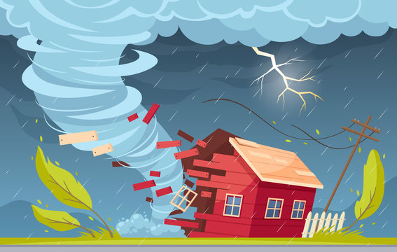
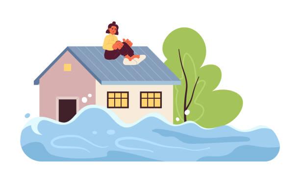
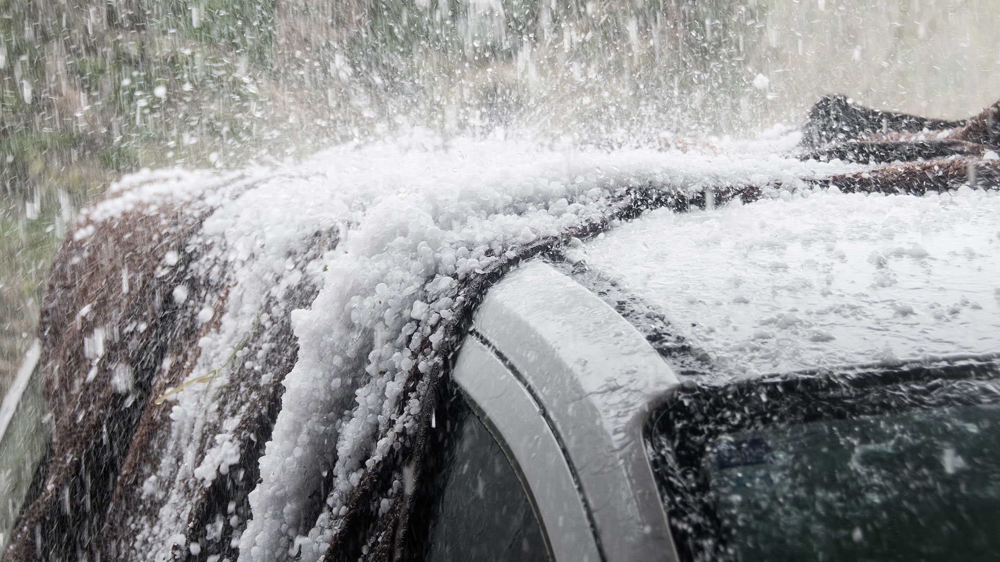

Natural Disasters Relevant to Alpharetta
Alpharetta, Georgia, while not typically prone to coastal hurricanes or major earthquakes, can experience a range of natural disasters. Understanding these risks and how to prepare for them is crucial for the safety of our community. This page outlines the most common natural disasters that can affect our area and provides essential safety information.
Severe Thunderstorms & Tornadoes
Georgia experiences frequent severe thunderstorms, especially during spring and summer. These can bring heavy rain, lightning, strong winds, and hail. Tornadoes, while less common than in some other states, are a significant threat and can develop rapidly.
- Threats: Damaging winds (straight-line winds and tornadoes), large hail, flash flooding, frequent lightning, power outages.
- Preparation: Stay informed with weather alerts, have a designated safe room or interior space, secure outdoor objects, trim trees.
- During: Seek shelter immediately during a tornado warning. Stay indoors during thunderstorms, away from windows and electrical appliances.
- More Information: Ready.gov - Severe Weather, NOAA Storm Prediction Center

Flooding
While Alpharetta is not coastal, heavy rainfall can lead to localized flash flooding, especially in low-lying areas, near creeks, and in urban areas with poor drainage. Flooding can occur rapidly and pose serious risks.
- Threats: Flash floods, riverine floods, property damage, road closures, contaminated water.
- Preparation: Know your flood risk, avoid building in flood-prone areas, have an evacuation plan, do not store valuables in basements.
- During: Never drive or walk through floodwaters. Move to higher ground. If trapped, seek refuge on a high spot and signal for help.
- More Information: Ready.gov - Floods, NOAA - Flood Safety


Winter Storms & Ice Events
Prepare for extreme cold, heavy snow, and ice. Learn about staying safe during blizzards and ice storms.
Winter storms can bring a variety of dangerous conditions, including heavy snow, freezing rain, sleet, and extreme cold. These events can lead to power outages, hazardous travel conditions, and hypothermia. Ice storms, in particular, can cause significant damage to trees and power lines, leading to prolonged disruptions. Being prepared involves understanding the risks, having an emergency kit, and knowing how to stay warm and safe.

Drought & Wildfire
Understand the risks of drought and wildfire, and how to protect your home and family.
Droughts are prolonged periods of abnormally low rainfall, leading to water shortages. They can severely impact agriculture, water supplies, and increase the risk of wildfires. Wildfires, often exacerbated by drought conditions, are uncontrolled fires that burn in wildland areas, consuming forests, brush, and grasslands. They pose significant threats to lives, property, and air quality.
Heatwaves
Summers in Georgia can bring extended periods of extreme heat and humidity, leading to heatwaves. These conditions can be dangerous, especially for vulnerable populations like the elderly, young children, and those with chronic illnesses.
- Threats: Heatstroke, heat exhaustion, dehydration, exacerbation of existing health conditions.
- Preparation: Stay hydrated, wear light clothing, know the signs of heat-related illness, identify cooling centers.
- During: Stay in air-conditioned environments, take cool showers, limit outdoor activities during peak heat hours, check on vulnerable neighbors.
- More Information: Ready.gov - Extreme Heat, CDC - Extreme Heat

Hailstorms
Hailstorms are storms of hail, which can cause concussions, fractures, and even fatal head injuries if caught outdoors. It can also cause billions of dollars in losses annually due to damage to property and vehicles. It can also kill wildlife and strip foliage from trees and plants. This destruction can harm local ecosystems.